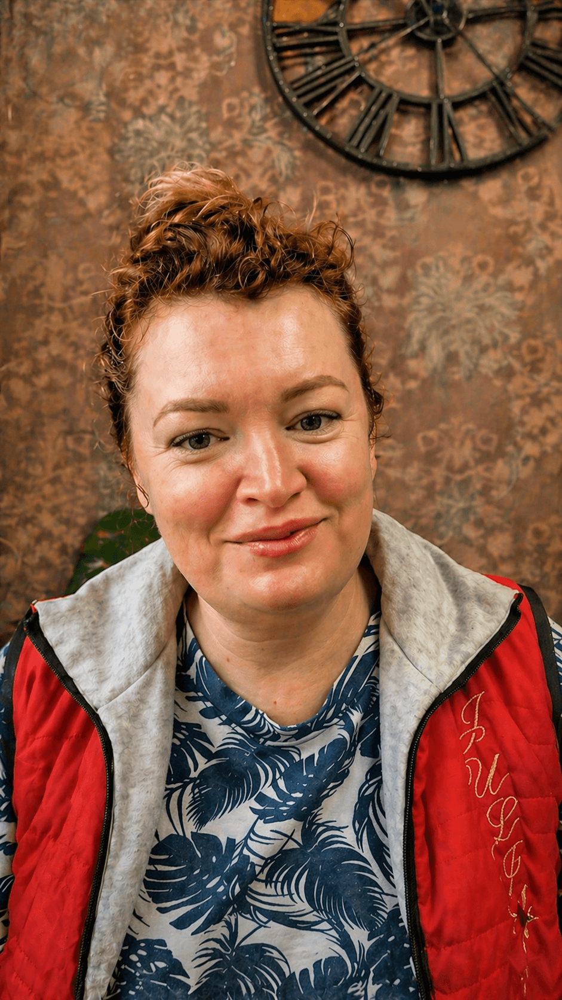
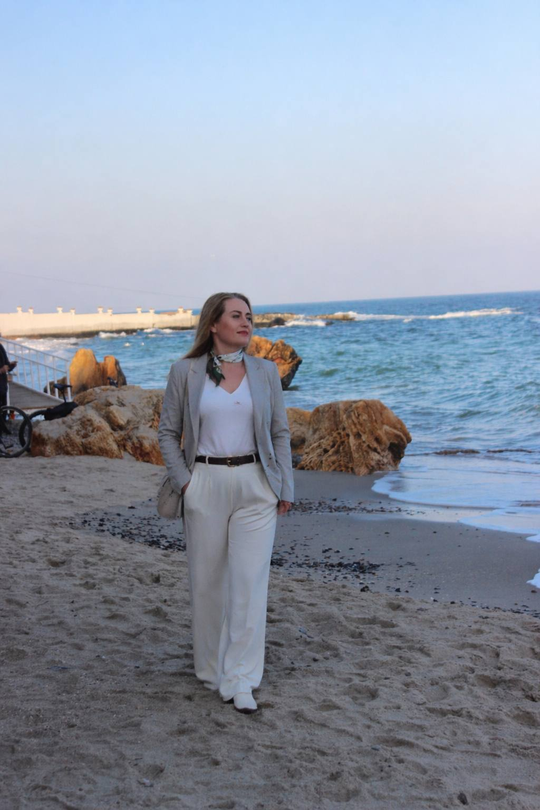

Регресія працює там, де інші методи зупиняються.
Результат - вже після першої сесії.
Регрессия работает там, где остальные методы останавливаются.
Результат - после первой сессии.
Онлайн. 2–3 хвилини на запис. Онлайн. 2–3 минуты на запись.
Це не слабкість і не випадковість. Це патерн, у якого є причина.Это не слабость и не случайность. Это паттерн, у которого есть причина.
Це не характер. Не доля. Це причина, яку можна знайти й усунути.
Я допомагаю знайти причину та змінити ситуацію.
Это не характер. Не судьба. Это причина, которую можно найти и убрать.
Я помогаю найти причину и изменить ситуацию.
Більшість методів працюють з тим, що на поверхні: з емоціями, з поведінкою, з думками. Я працюю глибше — з тим, що лежить в основі цих станів.Большинство методов работают с тем, что на поверхности: с эмоциями, с поведением, с мыслями. Я работаю глубже — с тем, что лежит в основе этих состояний.
Ми не будемо роками обговорювати, що ви відчуваєте. Замість цього - знайдемо конкретний момент, з якого почалася проблема.Мы не будем годами обсуждать, что вы чувствуете. Вместо этого - найдём конкретный момент, с которого началась проблема.
Я не скажу вам «просто відпусти» або «зміни мислення». Тому що якби це працювало - ви б уже давно це зробили.Я не скажу вам «просто отпусти» или «поменяй мышление». Потому что если бы это работало - вы бы уже давно это сделали.
Ми знаходимо те, що запустило повторюваний сценарій - і опрацьовуємо це. Не на рівні розуму. На рівні того, де це насправді застрягло.Мы находим то, что запустило повторяющийся сценарий - и прорабатываем это. Не на уровне ума. На уровне того, где это на самом деле застряло.
Все відбувається онлайн. Ви – вдома, у комфортній обстановці. Сесія триває близько 1,5–2 годин. Ось що буде:Всё происходит онлайн. Вы – дома, в комфортной обстановке. Сессия длится около 1,5–2 часов. Вот что будет:
Ми коротко обговорюємо ваш запит – що турбує, що хочете змінити.Мы коротко обсуждаем ваш запрос – что беспокоит, что хотите изменить.
Ви заплющуєте очі та розслабляєтеся. Як перед сном – тільки ви все чуєте і усвідомлюєте.Вы закрываете глаза и расслабляетесь. Как перед сном – только вы всё слышите и осознаёте.
Я спрямовую вашу увагу всередину. Разом ми знаходимо момент, з якого почалася проблема.Я направляю ваше внимание внутрь. Вместе мы находим момент, с которого началась проблема.
Ми опрацьовуємо те, що знайшли – щоб воно перестало на вас впливати.Мы прорабатываем то, что нашли – чтобы оно перестало на вас влиять.
У кожної – своя історія. Але причини часто схожі. Ось з чим до мене приходять найчастіше:У каждой – своя история. Но причины часто похожи. Вот с чем ко мне приходят чаще всего:
Одні й ті ж самі типи партнерів. Одні й ті ж конфлікти. Відчуття, що ви ходите по колу – і не можете вийти. Знаходимо, що запускає цей сценарій, – і зупиняємо його.Одни и те же типы партнёров. Одни и те же конфликты. Ощущение, что вы ходите по кругу – и не можете выйти. Находим, что запускает этот сценарий, – и останавливаем его.
Зовні все нормально – але всередині постійне напруження. Занепокоєння без причини. Відчуття, що ось-ось щось трапиться. Знаходимо, звідки це йде, – і прибираємо джерело.Внешне всё нормально – но внутри постоянное напряжение. Беспокойство без причины. Ощущение, что вот-вот что-то случится. Находим, откуда это идёт, – и убираем источник.
Не розумієте, чого хочете. Робите те, що потрібно іншим. Відчуваєте порожнечу, хоча зовні все на місці. Знаходимо момент, коли ви втратили контакт із собою, – і відновлюємо його.Не понимаете, чего хотите. Делаете то, что нужно другим. Чувствуете пустоту, хотя внешне всё на месте. Находим момент, когда вы потеряли контакт с собой, – и восстанавливаем его.
Хочете заробляти більше, але ніби щось гальмує. Не лінь. Не відсутність навичок. А щось усередині, що не пускає. Знаходимо цю установку – і прибираємо її.Хотите зарабатывать больше, но как будто что-то тормозит. Не лень. Не отсутствие навыков. А что-то внутри, что не пускает. Находим эту установку – и убираем её.
Реальні історії клієнтів. Без зайвих деталей - але з реальними результатами.Реальные истории клиентов. Без лишних деталей - но с настоящими результатами.
Лишний вес. Диеты и усилия не давали стойкого результата. Лишний вес. Диеты и усилия не давали стойкого результата.
В основе оказалась психологическая защита: тело воспринималось как что-то «правильное», менять его не хотелось. После первого сеанса пелена спала — пришло осознание проблемы. В основе оказалась психологическая защита: тело воспринималось как что-то «правильное», менять его не хотелось. После первого сеанса пелена спала — пришло осознание проблемы.
После второго сеанса клиентка начала ощущать своё тело совершенно иначе. Появилось желание меняться — изнутри, а не через усилие воли. После второго сеанса клиентка начала ощущать своё тело совершенно иначе. Появилось желание меняться — изнутри, а не через усилие воли.
Отношения не получаются сколько себя помню. Всё повторяется по одному сценарию. Отношения не получаются сколько себя помню. Всё повторяется по одному сценарию.
В основе — глубокое состояние «я недостойна любви». За ним стояли самообесценивание и стыд, уходящие корнями в опыт, который долго оставался неосознанным. В основе — глубокое состояние «я недостойна любви». За ним стояли самообесценивание и стыд, уходящие корнями в опыт, который долго оставался неосознанным.
После сессии восстановилось чувство собственного достоинства. Через полчаса после работы позвонил мужчина — впервые клиентка говорила с ним спокойно, уверенно и без привычной тревоги. После сессии восстановилось чувство собственного достоинства. Через полчаса после работы позвонил мужчина — впервые клиентка говорила с ним спокойно, уверенно и без привычной тревоги.
Хроническая бессонница. Засыпала только с помощью препаратов. Хроническая бессонница. Засыпала только с помощью препаратов.
В основе оказались состояния бессилия и стыда, связанные с глубоко зафиксированным внутренним опытом. В основе оказались состояния бессилия и стыда, связанные с глубоко зафиксированным внутренним опытом.
После терапии пришли спокойствие, внутренняя опора и ощущение безопасности. В тот же вечер клиентка заснула без таблеток — впервые за долгие годы. После терапии пришли спокойствие, внутренняя опора и ощущение безопасности. В тот же вечер клиентка заснула без таблеток — впервые за долгие годы.
Страх проявляться публично. Не могла понять, откуда он берётся. Страх проявляться публично. Не могла понять, откуда он берётся.
Внутренний ребёнок боится идти вперёд самостоятельно — он воспринимает себя слабым и нуждается в поддержке сильного человека рядом. Внутренний ребёнок боится идти вперёд самостоятельно — он воспринимает себя слабым и нуждается в поддержке сильного человека рядом.
После сессии клиентка впервые чётко увидела природу своего страха. Появилось понимание, с чем именно работать дальше и в каком направлении двигаться. После сессии клиентка впервые чётко увидела природу своего страха. Появилось понимание, с чем именно работать дальше и в каком направлении двигаться.
Сильная ревность, постоянная тревога в отношениях. Не получалось справиться самостоятельно. Сильная ревность, постоянная тревога в отношениях. Не получалось справиться самостоятельно.
В основе — неуверенность в себе и страх потерять близкого человека, которые запускали ревность как защитную реакцию. В основе — неуверенность в себе и страх потерять близкого человека, которые запускали ревность как защитную реакцию.
После сессии эмоционально-образной терапии пришли внутреннее спокойствие и уверенность в себе. Отношения перестали быть источником постоянного беспокойства. После сессии эмоционально-образной терапии пришли внутреннее спокойствие и уверенность в себе. Отношения перестали быть источником постоянного беспокойства.
Іноді краще за будь-які описи говорять самі люди, які вже пройшли цей шлях. Иногда лучше любых описаний говорят сами люди, которые уже прошли этот путь.

Два формати – залежно від того, на якому етапі ви знаходитесь.Два формата – в зависимости от того, на каком этапе вы находитесь.
Не знаєте, який формат вибрати? Напишіть мені – підкажу.Не знаете, какой формат выбрать? Напишите мне – подскажу.

Я працюю з жінками, які вже не вперше стикаються з однією і тією ж ситуацією.
Психолог, книги, медитації.
Іноді стає легше.
Але минає час – і все повертається.
Це не тому, що ви робите щось не так.
Просто причина залишається на місці.
На сесії ми не обговорюємо все по колу.
Ми знаходимо, що саме запускає цей сценарій – і прибираємо це.
Коли причина йде, змінюється не тільки стан на час –
змінюється сама ситуація.
Я работаю с женщинами, которые уже не первый раз сталкиваются с одной и той же ситуацией.
Психолог, книги, медитации.
Иногда становится легче.
Но проходит время – и всё возвращается.
Это не потому, что вы делаете что-то не так.
Просто причина остаётся на месте.
На сессии мы не разбираем всё по кругу.
Мы находим, что именно запускает этот сценарий – и убираем это.
Когда причина уходит, меняется не только состояние на время –
меняется сама ситуация.
Школа регресій О. КройтораШкола регрессий А. Кройтора
Практика та методи роботи з підсвідомістюПрактика и методы работы с подсознанием
Психологія, травма, ПТСР, внутрішня дитинаПсихология, травма, ПТСР, внутренний ребёнок
300+ проведених сесій300+ проведённых сессий
Якщо у вас є питання – найімовірніше, воно вже тут.Если у вас есть вопрос – скорее всего, он уже здесь.
Це спосіб знайти, звідки росте ваша ситуація.
Що одного разу сталося. Що ви тоді вирішили про себе або про людей. І як це рішення досі тихо керує вашим життям.
Багато хто приходить із відчуттям: «я все розумію – але нічого не змінюється». Ось саме з цього моменту і починається наша робота.
Ми не шукаємо нічого страшного. Ми шукаємо причину.
Это способ найти, откуда растёт ваша ситуация.
Что однажды произошло. Что вы тогда решили о себе или о людях. И как это решение до сих пор тихо управляет вашей жизнью.
Многие приходят с ощущением: «я всё понимаю – но ничего не меняется». Вот именно с этого момента и начинается наша работа.
Мы не ищем ничего страшного. Мы ищем причину.
Ні. І це одне з перших запитань, яке ставлять майже всі.
Регресія – це робота з пам'яттю та емоціями. Без «енергій», «порчі» та «минулих життів» – якщо тільки ви самі не захочете досліджувати щось у цьому напрямку.
Ми працюємо з тим, що реально сталося у вашому житті. І дивимося, що змінилося після.
Якщо вас турбує «а раптом це несерйозно» або «а раптом мене обдурять» – це зрозуміло. Саме тому перша зустріч – діагностична. Ви самі вирішуєте після неї, продовжувати чи ні.
Нет. И это один из первых вопросов, который задают почти все.
Регрессия – это работа с памятью и эмоциями. Без «энергий», «порчи» и «прошлых жизней» – если только вы сами не захотите исследовать что-то в этом направлении.
Мы работаем с тем, что реально произошло в вашей жизни. И смотрим, что изменилось после.
Если вас беспокоит «а вдруг это несерьёзно» или «а вдруг меня обманут» – это понятно. Именно поэтому первая встреча – диагностическая. Вы сами решаете после неё, продолжать или нет.
Не втратите. Зовсім.
Це не гіпноз із телевізора. Ви не засинаєте. Ніхто вас не «програмує».
Ви перебуваєте в розслабленому стані – ніби лежите із заплющеними очима перед сном. Чуєте мій голос. Усвідомлюєте, де перебуваєте. Пам'ятаєте все.
Ви можете зупинитися будь-якої миті. Ви можете щось не говорити. Ви вирішуєте, куди ми йдемо.
Я ставлю запитання. Ви залишаєтеся в контролі – весь час.
Не потеряете. Совсем.
Это не гипноз из телевизора. Вы не засыпаете. Никто вас не «программирует».
Вы находитесь в расслабленном состоянии – как будто лежите с закрытыми глазами перед сном. Слышите мой голос. Осознаёте, где находитесь. Помните всё.
Вы можете остановиться в любой момент. Вы можете чтось не говорить. Вы решаете, куда мы идём.
Я задаю вопросы. Вы остаётесь в контроле – всё время.
Так. Формат не впливає на глибину роботи.
Вам потрібне тихе місце, навушники та зручне положення – лежачи або сидячи. Більше нічого.
Більшість моїх клієнтів працюють саме онлайн – з різних міст і країн. Результати не відрізняються від очного формату.
Да. Формат не влияет на глубину работы.
Вам нужно тихое место, наушники и удобное положение – лёжа или сидя. Больше ничего.
Большинство моих клиентов работают именно онлайн – из разных городов и стран. Результаты не отличаются от очного формата.
Залежить від запиту – і від того, що саме ми знаходимо.
Багато хто приходить із досвідом: «була у психолога, стало легше – через місяць усе повернулося». Це не означає, що допомога не працює. Це означає, що не дісталися до причини.
Діагностична сесія – одна зустріч. Ми визначаємо запит, знаходимо, звідки це йде, і розуміємо, що потрібно далі.
Для повноцінної роботи з однією темою зазвичай потрібно 4–6 сесій. Цього достатньо, щоб не просто «полегшало», а щоб ситуація змінилася – і не повернулася.
Зависит от запроса – и от того, что именно мы находим.
Многие приходят с опытом: «была у психолога, стало легче – через месяц всё вернулось». Это не значит, что помощь не работает. Это значит, что не добрались до причины.
Диагностическая сессия – одна встреча. Мы определяем запрос, находим, откуда это идёт, и понимаем, что нужно дальше.
Для полноценной работы с одной темой обычно нужно 4–6 сессий. Этого достаточно, чтобы не просто «полегчало», а чтобы ситуация изменилась – и не вернулась.
Це нормально – і це не означає, що нічого не відбувається.
Багато хто хвилюється: «а раптом у мене не вийде» або «я не той тип». Майже завжди це виявляється марним.
Сприйняття у всіх різне. Хтось бачить образи, хтось просто відчуває, хтось «просто знає» без пояснень. Усе це працює.
Результат – це не те, що трапилося на сесії. Це те, що починає змінюватися в житті після.
Это нормально – и это не значит, что ничего не происходит.
Многие переживают: «а вдруг у меня не получится» или «я не тот тип». Почти всегда это оказывается напрасным.
Восприятие у всех разное. Кто-то видит образы, кто-то просто чувствует, кто-то «просто знает» без объяснений. Всё это работает.
Результат – это не то, что случилось на сессии. Это то, что начинает меняться в жизни после.
Може бути легка втома – як після чесної, глибокої розмови. Це нормально і не повинно лякати.
У наступні кілька днів часто приходять усвідомлення. Змінюється реакція на звичні ситуації. Щось, що раніше чіпляло – перестає.
У когось зміни помітні одразу. У когось – поступово, протягом 1–2 тижнів. Обидва варіанти – це робота.
Может быть лёгкая усталость – как после честного, глубокого разговора. Это нормально и не должно пугать.
В следующие несколько дней часто приходят осознания. Меняется реакция на привычные ситуации. Что-то, что раньше цепляло – перестаёт.
У кого-то изменения заметны сразу. У кого-то – постепенно, в течение 1–2 недель. Оба варианта – это работа.
Залишилося питання, якого тут немає?Остался вопрос, которого здесь нет?
Написати СвітланіНаписать СветланеЦе займе 2–3 хвилини. Я прочитаю ваші відповіді особисто і напишу протягом дня.Это займёт 2–3 минуты. Я прочитаю ваши ответы лично и напишу в течение дня.